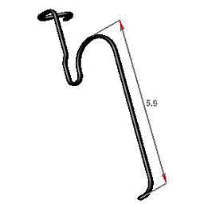
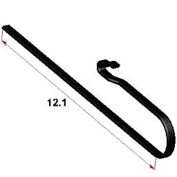
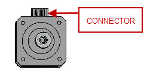

Service Loop Cable - Theory of Operation
This document provides basic information regarding the Service Loops in Access instruments with 3 inch pipettor gantrys.
Non Linear Pipettor Gantry X and Z Cables
There are two service loops in the Access 2 Instrument.
| Part Description | Picture |
|---|---|
|
Z Cable - (Short Loop) Connects the Ultrasonics Transducer to the X Axis interface PCB. It contains
|
 |
|
X Cable - (Long Loop) Connects the Pipettor X Axis Interface PCB to the Pipettor Interconnect PCB. It contains:
|
 |
X Axis Linear Slide Pipettor Gantry Components
The X Axis Linear Slide reagent pipettor performs the same as the previous version but features a few re-engineered components
| Component | Description and Function |
|---|---|
|
Y Axis Linear Slide 
|
The Y Axis linear slide replaces the guide rods that supported the pipettor Y movement. |
|
Spring Tensioning Idler for X and Z belt tensioning 
|
The spring tensioned X and Z idler will provide uniform tension for the drive belts. To tension the belt (see picture):
To remove the belt, perform the same steps, but drive the tensioning screw toward the bracket (compressing the spring). |
|
Cable addition for the Z Motor components  |
The Z Motor Loop Cable was added to the chain to provide a quick disconnect from the Z Motor. This can eliminate the need to remove the cabling from the chain during a component change. |